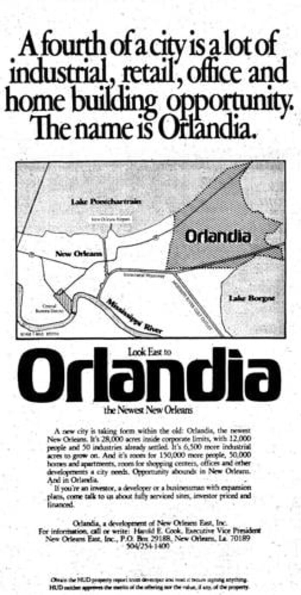
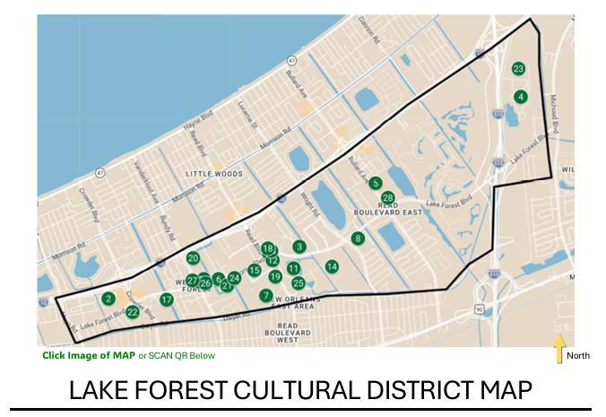

Proposed — application in progress
1920s buildingshistoric by 1970
1976 corridorhistoric by 2026
Today2026

Honest numbers
Where we are today: $0.00
Historic Tax Credit program investment, 2017–24. Zeros shown are real zeros — they are the case for the district, not a decoration.
Plain terms
What the designation does — and doesn't.
It is
It is not
The footprint
One district. One map.
The proposed map remains the 2025 proposed map — Mayo Rd. to Michoud Blvd., anchored by Joe W. Brown Memorial Park and the Audubon Louisiana Nature Center.
